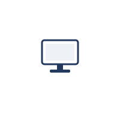
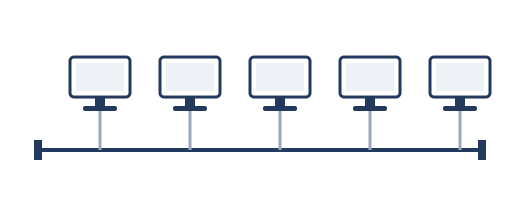
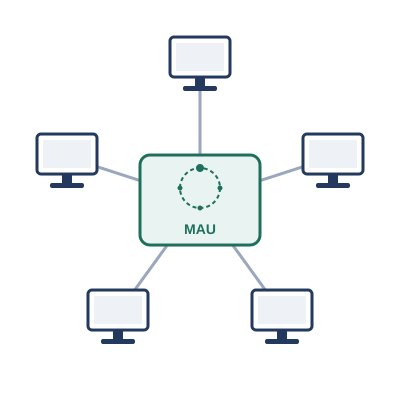
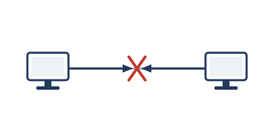
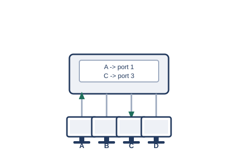
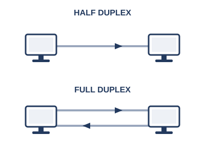

序章 ネットワークが生まれるまで
これから語るのは、コンピュータがまだ1台ずつ孤立して動いていた時代から、今のように世界中がひとつながりになるまでの物語です。実際の規格や年表をそのままなぞったものではなく、事実とはかなり異なっている部分もあります。技術が生まれた順番やきっかけも、分かりやすさを優先して大胆に組み立て直しています。あくまで、全体像をつかむためのイメージとして読んでください。
一台だけでは、何も始まらない
はじまりは、1台のコンピュータでした。計算をし、データを保存し、結果を表示する。それだけなら、他の機械とつながる必要はありません。

しかし、隣の部屋にもう1台コンピュータが置かれたとき、事情が変わります。片方で作ったデータを、もう片方でも使いたい。わざわざフロッピーディスクを持って歩くのは、あまりに面倒です。
そこで生まれたのが、「つなぐ」という発想でした。2台の機械を同軸ケーブルで結び、電気信号でデータをやり取りする。ネットワークの、いちばん最初の一歩です。
ただし、つないだだけでは終わりません。3台、4台とコンピュータが増えてくると、「今送った信号は、いったいどの機械宛てなのか」を区別する必要が出てきます。ここで、それぞれの機械に固有の名前――アドレス――を割り振るという発想が生まれました。
一本の線に、みんなでぶら下がる
やがて、1つの部屋に何台ものコンピュータが並ぶようになります。機械同士のつなぎ方にはいくつかの方法が考えられましたが、広まっていったのは、1本の同軸ケーブルを長く延ばし、そこに全員をぶら下げてしまう方式でした。この方式は、あとからコンピュータを増やしたり減らしたりする際にも、少ない手間で済むという特徴を持っていました。

ただし、同軸ケーブルにも限界があります。建物のフロアいっぱいに配線を延ばしていくと、信号はだんだん弱くなり、やがて読み取れなくなってしまうのです。そこで、途中に信号を増幅して送り直す中継器――リピータ――を挟み込み、ケーブルをより長く延ばせるようにしました。
こうして1本の線にたくさんのコンピュータがぶら下がると、誰かが話し始めた信号は、線を通じて全員に届いてしまいます。ここで生きてくるのが、さきほどのアドレスです。信号には宛先のアドレスが書き込まれており、受け取った側は「これは自分宛てか」を確認し、違っていれば黙って読み捨てる。届くのは全員でも、実際に処理するのは宛先の1台だけ、というわけです。
ただ、それだけでは足りません。誰かが話している最中に別の誰かも話し出せば、信号同士がぶつかってしまいます。そこで考え出されたのが、「話してよい権利」――トークン――を、あらかじめ決めた順番で回していく方式でした。同じ1本の線にみんなでぶら下がったまま、論理的な輪を作ってトークンを回す。これが、トークンバスと呼ばれる方式です。
長い一本の線という弱点
しかし、この1本の共有ケーブルには弱点がありました。フロアいっぱいに延びた同軸ケーブルのどこか1か所が切れただけで、そこから先――ときには全体――が使えなくなってしまうのです。しかも、長いケーブルのどこが切れているのかを探し出すのは、簡単な作業ではありません。
そこで発想が転換されます。1本の長い線をみんなで共有するのではなく、各コンピュータから中央の集線装置まで、1本ずつ専用のケーブルを引く。集線装置の内部で輪とトークンを維持し、どのコンピュータが今つながっているかを把握しておけば、1本のケーブルにトラブルがあっても、影響はその1台だけで済みます。こうして実用化されたのが、「トークンリング」という方式です（この集線装置は、厳密にはMAUと呼ばれますが、詳しくは扱いません）。

順番を待たない、という発想
トークンリングは、衝突が起きないという点では優秀な方式でした。ただし、トークンが自分のところに回ってくるまでは話し始められません。誰も話していない状況でも、トークンが一周してくるまでは律儀に待たされてしまいますし、輪を維持するための専用の回路も必要で、コストもかさみます。
そこで、まったく逆の発想も生まれました。順番を待つのはやめて、あらかじめ回線が空いているかどうかを確認してから話し始める。それでももし誰かと同時に話し出してぶつかってしまったら、そのときはじめて検知して、お互いランダムな時間だけ待ってから送り直せばいい――という考え方です。これが、CSMA/CDと呼ばれる方式でした。

順番を待つ手間がなくなった分、CSMA/CDは速く、そして仕組みがシンプルな分だけ安く作れました。CSMA/CD陣営もやがて、トークンバスと同じ問題――1本の共有ケーブルのどこかが切れると全体が止まってしまう――に行き当たり、同じ答えにたどり着きます。ただし、輪を維持するような複雑な仕組みは必要なく、ただ受け取った電気信号を全員に送り出すだけの、単純な箱で済みました。今でいう「ダムハブ」、リピータハブです。

CSMA/CDの「譲り合い」のルールは、まさにこの、全員が同じ1つの土俵に上がっている状態でこそ必要とされました。
衝突が消えていく
台数がさらに増えると、CSMA/CDの「譲り合い」だけでは追いつかなくなります。ぶつかり合い（コリジョン）があまりに頻繁に起こり、ネットワーク全体の効率が落ちてしまうのです。
この問題に答えを出したのが、L2スイッチでした。それまではダムハブにつながる全員が、衝突の起こりうる範囲――コリジョンドメイン――をまるごと共有していました。スイッチは、受け取った信号の送信元アドレスを覚えておき、「このアドレスはこのポートの先にいる」という対応表を作ります。次に届いた信号は、宛先アドレスをこの対応表と照らし合わせ、該当する1つのポートだけに送り出す。ダムハブのように全員へばらまくのではなく、必要な相手だけに届けられるようになったのです。

この「コリジョンドメインを小さくする」工夫を突き詰めていった結果、最終的には1つのポートに1台だけがつながる形になりました。ちょうど同じころ、配線そのものも同軸ケーブルから、より対線と呼ばれるケーブルに置き換わっていきます（両端のコネクタの形状はRJ45と呼ばれます）。より対線は4対の線を束ねた構造ですが、当時の規格で実際に使われるのはそのうち2対だけでした。1対を送信専用、もう1対を受信専用に割り当てることで、送信と受信が別々の経路を通るようになりました。

送信と受信が同時にこなせるこの全二重という仕組みと、1ポート1台という組み合わせが揃ったことで、そもそも衝突が起こる余地そのものがほとんどなくなっていきました。
サーバという新しい役割
コンピュータ同士がつながると、面白いことが起こります。あるコンピュータは、みんなが使いたいデータやサービスを一手に引き受けるようになっていきました。ファイルを保管する係、印刷を取りまとめる係。周りのコンピュータは、その係にお願いをする側にまわります。これが、サーバとクライアントという役割分担のはじまりです。
サーバは、用意するのも管理するのも手間のかかる、貴重な存在です。だから1台のサーバに、できるだけ多くの仕事をさせたい。ファイルの受け渡しも、メールのやり取りも、Webページの配信も、全部同じ1台で済ませられれば効率的です。
けれど、1台のサーバに複数のサービスを同居させると、新しい問題が持ち上がります。届いた通信が、いったいどのサービス宛てなのかを、区別できなければならないのです。ここで生まれたのが、窓口の番号――ポート番号という考え方でした。
組織を越えてつながる
こうして社内・学内といった限られた範囲でのネットワークができあがると、今度は「よそのネットワークともつながりたい」という欲求が生まれます。異なる組織のネットワーク同士を結ぶには、アドレスの体系をもっと大きな規模に広げる必要がありました。ここで登場するのが、IPアドレスと、ネットワーク同士の橋渡し役であるルータです。
ネットワークがネットワークとつながり、そのまたネットワークとつながっていく。この積み重ねの果てに生まれたのが、今わたしたちが当たり前のように使っているインターネットです。
開いた扉と、増えすぎた机
ただし、扉を開けば、招かれざる客も入ってきます。つながる相手が増えるほど、「入れたくない相手を締め出す」という発想が必要になりました。アクセス制御の考え方は、こうして生まれています。
外の世界とのつながりが広がっていく一方で、組織の中でも別の悩みが膨らんでいきました。人が増え、机が増え、機材が増え、フロアが足りなくなる。部署ごとにネットワークを分けたくても、そのたびに専用のスイッチを1台ずつ用意していては、配線もコストもかさむ一方です。「1台の機械の中に、まるで複数の独立したネットワークがあるかのように見せかけられないか」――そんな発想から、次の技術が生まれることになります。
こうして振り返ると、ネットワークの歴史は、ハードウェアとソフトウェアの技術進歩、コストの最適化、そして複雑さと単純さの間を行き来しながら、絶え間なく形を変えてきた道のりでもあります。ここから先は、この旅の続きを、一章ずつじっくりとたどっていきましょう。